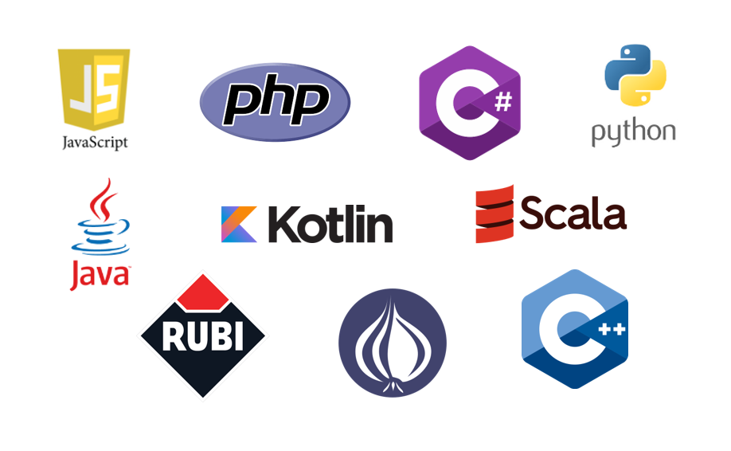

Inicio |
JavaScript |
Python |
PHP |
C++ |
Ruby |

La tecnología BackEnd es un sistema corporativo que se utilizan para dirigir una web o empresa, tales como sistemas de gestión de pedidos, inventario y procesamiento de suministro, recogiendo información de los usuarios u otros sistemas de tratamiento de datos en la compañía, gestionando la información que proporciona el usuario recogida por el sitio web. Para poder manejarlas se debe tener amplios conocimientos sobre los lenguajes frameworks y los tipos de base de datos, no siendo necesario conocer todos los lenguajes, pero sí entender y saber trabajar con algunos de ellos.
Ejemplos |
Explicación |
|---|---|
| Acceso a la Infromación | Reciben la información de los clientes, procesan sus solicitudes, registran los datos y ofrecen soluciones o dan un número de reporte para que las personas hagan seguimiento de su caso. |
| Capas de Seguridad | Es el responsable de crear y asegurar el funcionamiento de un sistema de acceso para que las personas puedan entrar a sus perfiles, asegurando que cuando al introducir un nombre de usuario y una contraseña, se verifique el acceso en el servidor web y se permita o no el acceso a una cuenta. |
Dentro de esta rama existen varios tipos de tecnologías Backend que son utilizadas en todo el mundo, en especial dentro de la elaboración de sitios, plataformas, lenguajes o aplicaciones que son utilizadas actualmente, siendo las mas importantes los siguientes programas:
